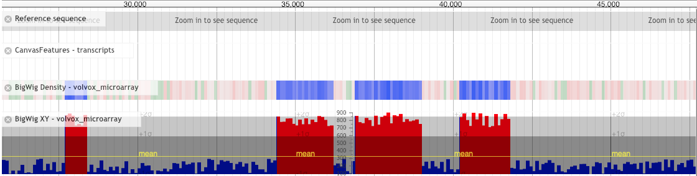
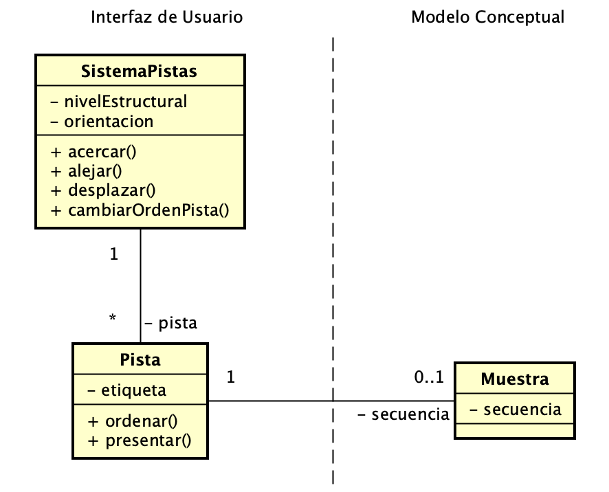

Pistas comparativas

Pistas de secuencias de datos de JBrowse
Genome Browser [1]
Problema:
Contexto:
Fuerzas:
-
El ejercicio de comparar secuencias genéticas a diferentes niveles de
detalle (desde bases genéticas hasta genes o cromosomas) supone alta carga cognitiva al
usuario.
-
Las características diferentes pueden aparecer a varios niveles estructurales: cromosoma, gen, bases
genéticas.
Solución:
Presentar las secuencias genéticas a través de un sistema de pistas. Una pista es un componente visual en la interfaz de
usuario que presenta gráficamente el contenido de una muestra o
secuencia genética particular obtenida a partir de la dirección física de un fichero, o una URL. La pista
debe soportar distintos formatos de de secuencias y fuentes (p.ej. una secuencia provista por GenBank.). El sistema de pistas presenta las pistas considerando:
-
Adyacencia.- Las pistas son situadas una junto a la otra.
-
Alineación.- La posición de una base de una secuencia genética debe
coincidir con la posición de las otras secuencias.
-
Semántica.- La nivel semántico estructural (cromosomas, genes, bases
genéticas) debe ser el mismo para todas las secuencias en cada pista.
La orientación del sistema de pistas es horizontal, ocupando en gran
medida el espacio de la interfaz de usuario. Opcionalmente, el orden de las pistas puede ser modificado por
el usuario.
El sistema de pistas sincroniza la navegación unidimensional por todas
las pistas. Por ejemplo, si el usuario se desplaza a una posición específica de una secuencia contenida en
una pista, todo el conjunto de pistas se desplaza a la misma posición y al mismo tiempo. Las secuencias genéticas son unidimensionales (la posición es la única dimensión)
y el nivel acercamiento o alejamiento permite identificar cromosomas, genes, variaciones, bases.
Esta solución es aplicable cuando se dispone de un espacio amplio (vertical
u horizontal) en la interfaz de usuario.
Estructura:

Patrones relacionados:
Ejemplos:
Este patrón está presente en la mayoría de browser genéticos como UCSC
Genome Browser, Vista, Vega, Pileup, LooqSeq,
JBrowser, Genome Maps,
ChromoZoom, Biollance.
Un
ejemplo de track vertical puede encontrarse en UCSC Xena [2] , como lo muestra la
figura:
Bibliografía